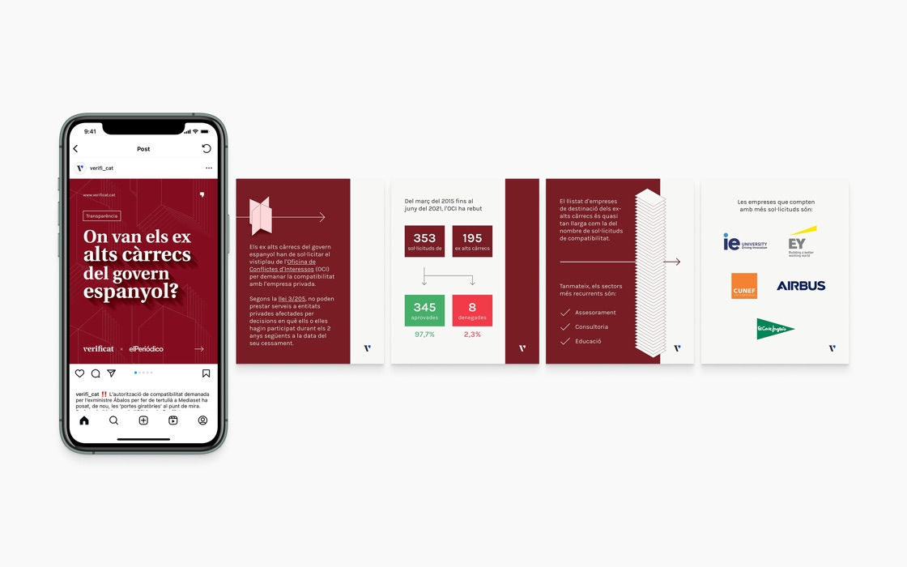
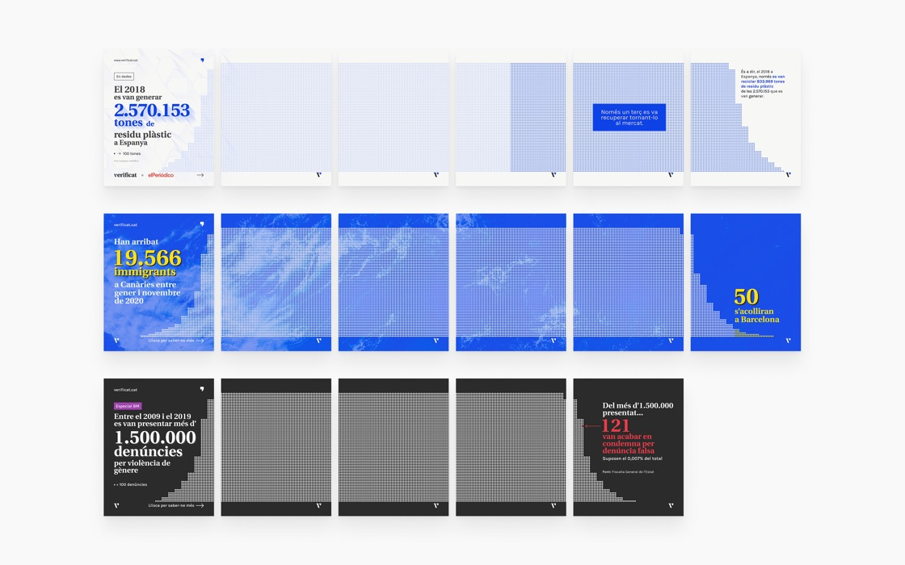
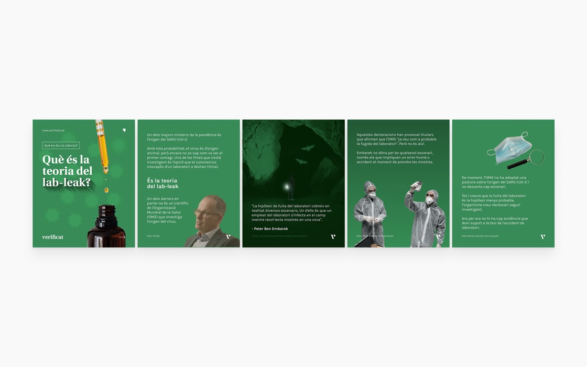
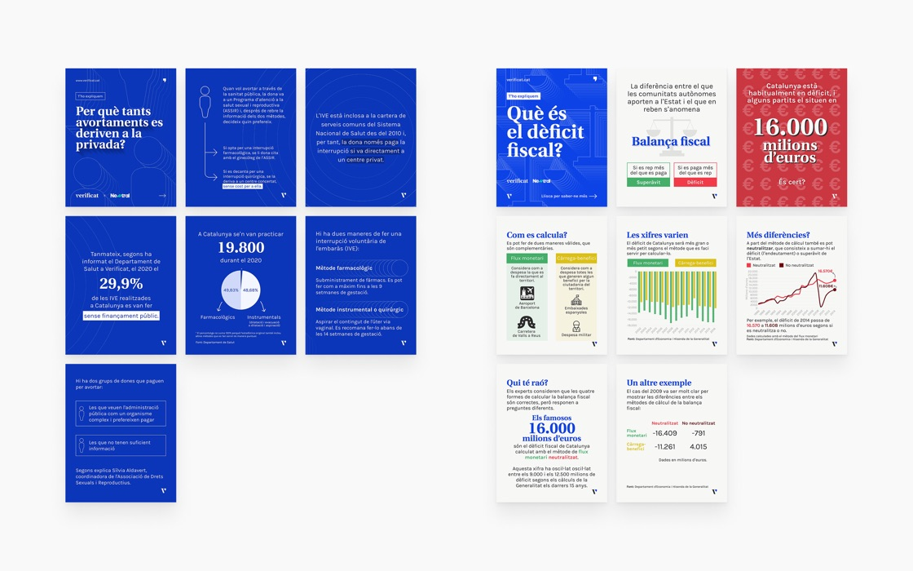
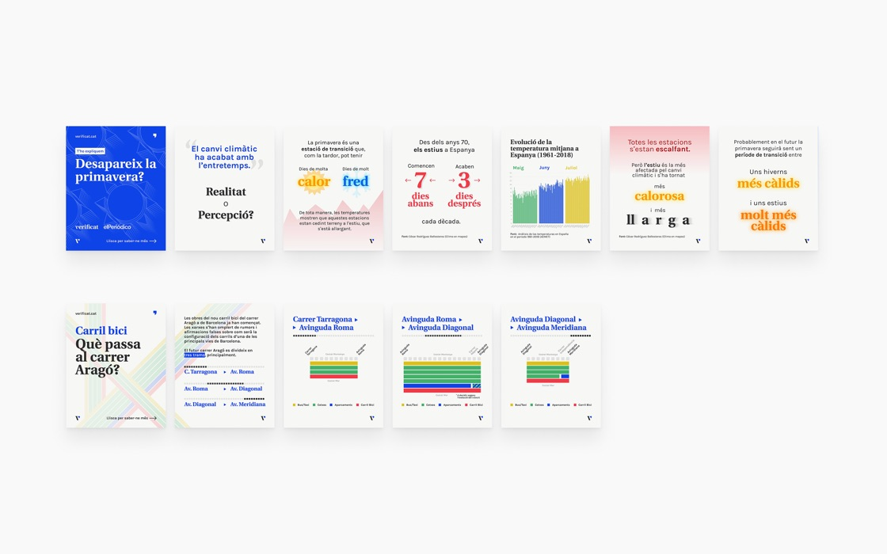
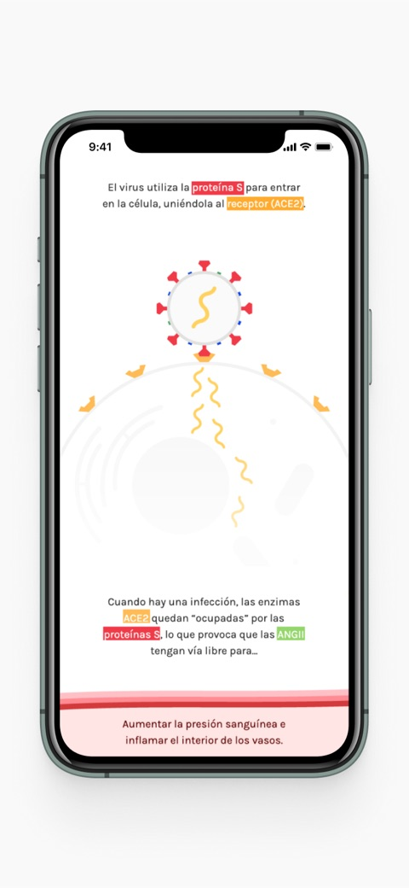
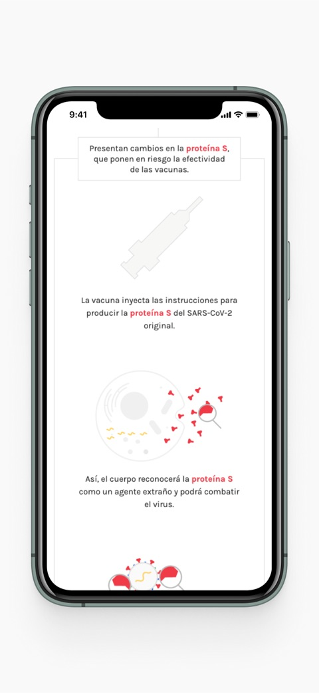
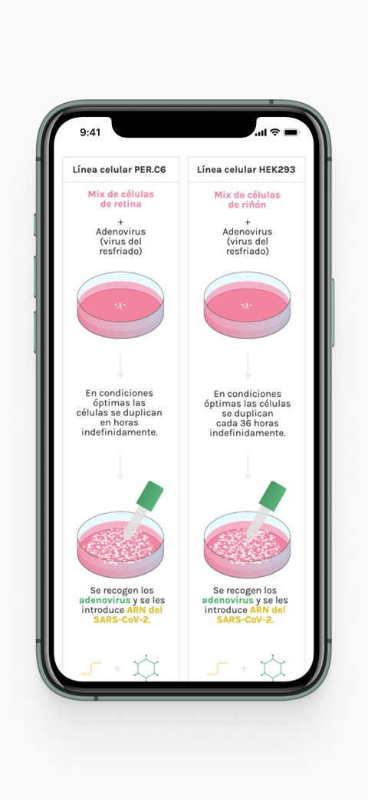
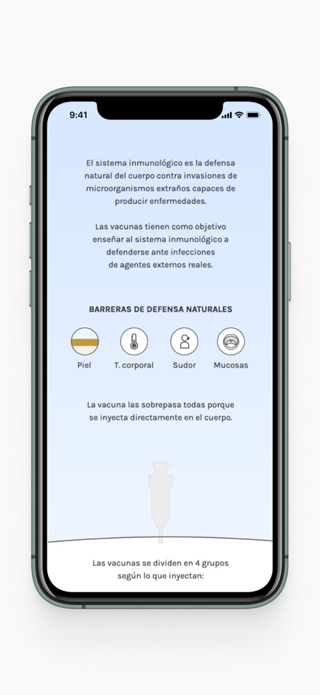
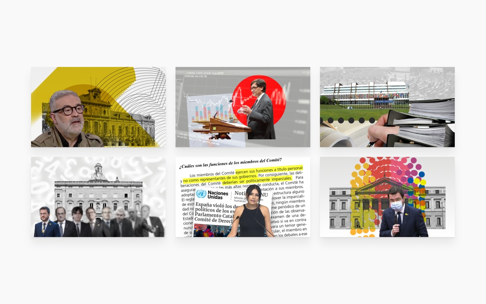

Verificat's visual system
Developed Verificat's visual identity, creating assets, templates and formats to systematize the production of digital content for the newsroom and special projects involving other brands
- Date
- 2021 - 2024
- For
- Verificat
- Role
- Visual identity, information design, infographics, digital news design
- Tools
- Figma

Selection of Verificat's posts on Instagram
I developed a consistent layout and composition style to maintain a coherent visual style
Context
When I joined Verificat in 2020, its branding already existed. A logo, set of colors, website and visual language for the fact-checking verdicts were already in place. What was missing was a set of templates and guidelines that would allow the newsroom to create different materials, ranging from social media posts and graphs, to documents, presentations or even posters.
Role
I was tasked with creating a visual language that would both respect Verificat's preexisting identity and give enough flexibility to create whatever material or content the newsroom needed. This was particularly challenging because, as a fact-checking platform, the visuals had to maintain a serious and unbiased tone, while also being visually appealing. At the same time, all used resources had to be free to access and preferably CC0 to ensure reproducibility. At first I was solely responsible for creating all visual assets, based on the newsroom fact-checks, and adapting the original text to a social media context while maintaining its original meaning. As Verificat grew I created a system based on a shared repository and templates in Canva that allowed fact-checkers to create their own content to speed up content production.

Carousel post for a story on where former senior officials of the Spanish government end up working after leaving office
In in-depth stories such as this one, I maintained Verificat's visual identity, while using custom illustrations and flowcharts that would keep the viewer engaged.

Three examples of posts using dot matrices to represent large numeric quantities
Co-created with Alba Tobella, this format made use of Instagram's carousel slide scroll to emphasize the scale of certain quantities, while making it possible to compare them with smaller ones using different colors

An Instagram post regarding the COVID-19 "lab-leak" origin theory with free-to-use stock images
One of Verificat's challenges was illustrating hard-to-explain topics with little to no visual resources. Some stories required the normalization of stock images with different styles to ensure a coherent and visually appealing result.

Posts with sensitive or complex topics (such as abortion on the left or fiscal balances on the right) required a mix of thoughtful explanations based on the original articles and graphs.

Another example of posts mixing graphs with visually engaging information
The first post is about climate change, while the other one discusses future plans for the bike lane on one of Barcelona's main streets.
Scientific infographics about COVID-19 based on the articles published by Andrea Arnal, Verificat's science reporter





Lead art proposals for Verificat
As a visual exploration, I developed a custom format proposal for the fact-checks' lead art based on free-to-use images, story-related assets and simple geometric shapes